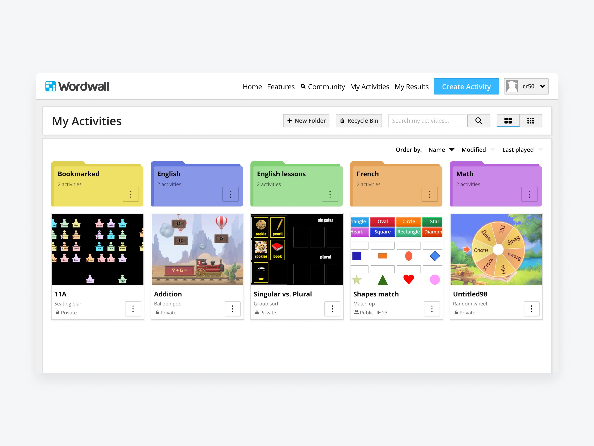
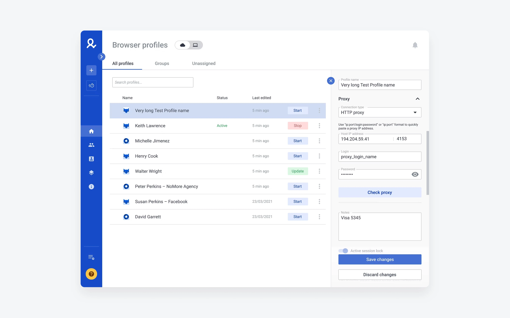
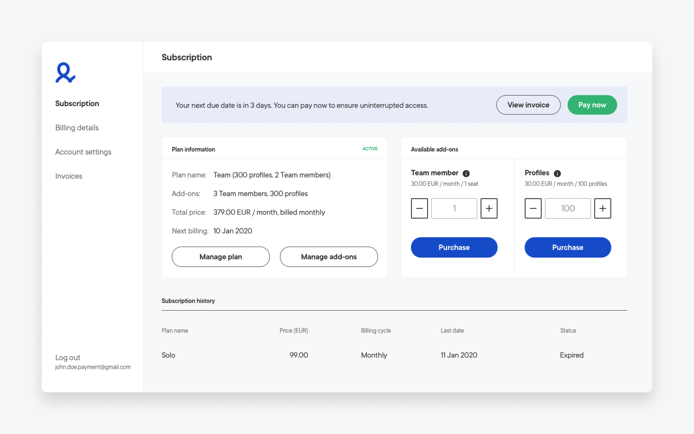

I design SaaS products and judge them by what they move.
Eight years across B2B and B2C — research-led, end to end, and validated by what actually ships.

EdTech SaaS platform
Small, ownership-giving design changes — like letting teachers colour-code their folders — turned into measurable retention, proven with A/B experiments.

B2B anti-detect platform
Cut password-reset load ~30%, shipped the account switcher, and built the design system and research process behind them.

Billing portal for a SaaS platform
Replaced a third-party billing tool with a custom portal — one login, and the first-party data the business never had.
She really understands the value of continuous discovery — an expert at user interviews and usability tests, and a great workshop facilitator. Always puts the customer first.
Eight years across SaaS, three principles behind the work, and where design meets product strategy.
A podcast, a Chrome extension, and vzir.shop — what I build when no one's briefing me.